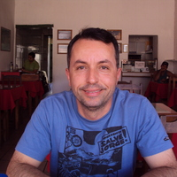

Perfil
Espaço preparado para apresentar a trajetória docente e a relação com o Curso de História da UFRB.
Memorial 20 anos · Perfil docente
Professor(a) do Curso de História da UFRB

Espaço preparado para apresentar a trajetória docente e a relação com o Curso de História da UFRB.
Espaço preparado para áudio ou vídeo do(a) professor(a).
Espaço para disciplinas, projetos, orientações, eventos, pesquisa, extensão e outras atividades.
Espaço para publicações, fotografias, documentos, registros e outros materiais selecionados para o Memorial.
Iniciativas do catálogo preliminar do Memorial, identificadas nos currículos Lattes.
Informações do currículo Lattes
Áreas de atuação: História Moderna · Inquisição · Brasil holandês.
Pesquisa História Moderna, especialmente Inquisição, cristãos-novos, Brasil holandês e história religiosa e social do mundo ibérico.
Síntese baseada no currículo Lattes consultado em 2026. As disciplinas específicas só são indicadas quando explicitamente documentadas. Consultar currículo Lattes.